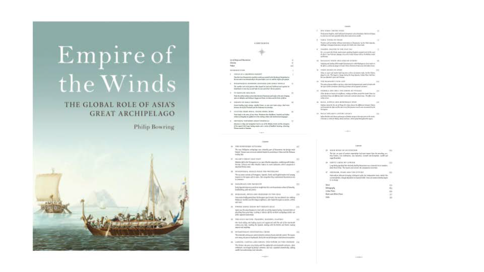
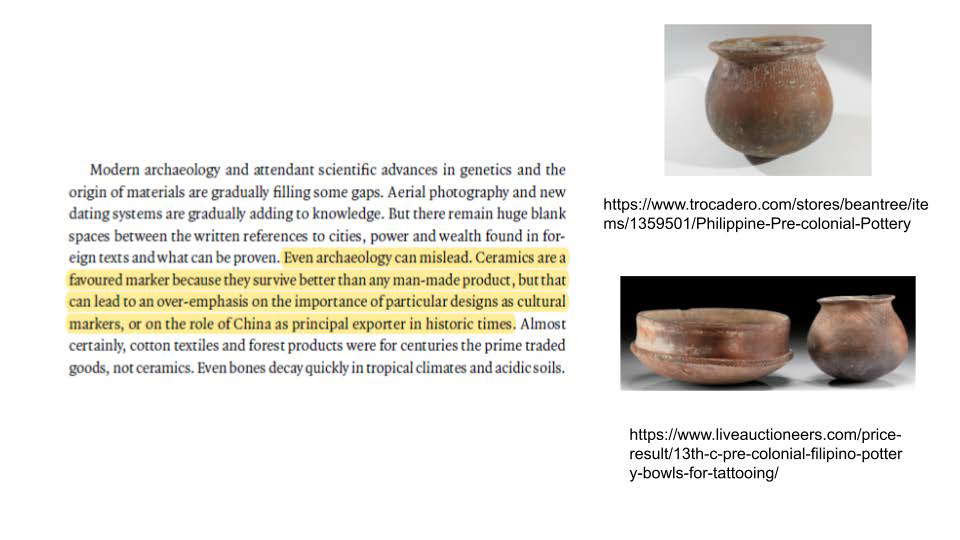I was particularly interested in ceramics as archival artifacts. Ancient Filipino texts were largely written in leaves which could not be preserved, so we turn to ceramics as accounts of trade.
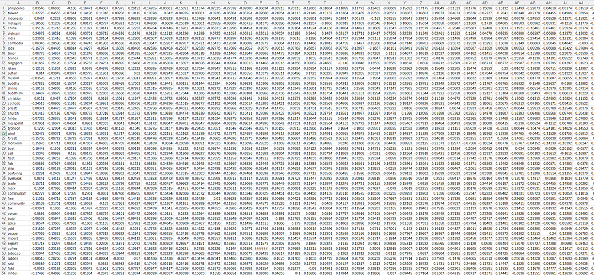 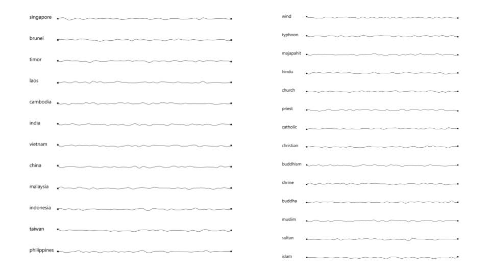Words found throughout the book were put through the autoencoder. The results of the autoencoder Python script were returned into an output Excel file. This file presented each magnitude in N-dimensional space as a vector (in this case N=50). This data could then be brought into grasshopper in Rhino and interpreted as waveforms.
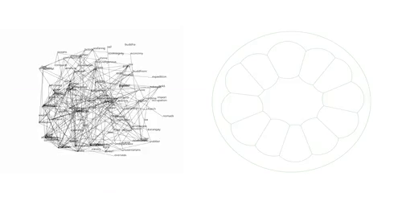These words could be distributed and anchored around 12 of these Southeast Asian Islands. A spring force model based on the autoencoder weights given to each words reveal their relations and proximities to each other in a latent space, as well as their conceptual closeness to particular islands.
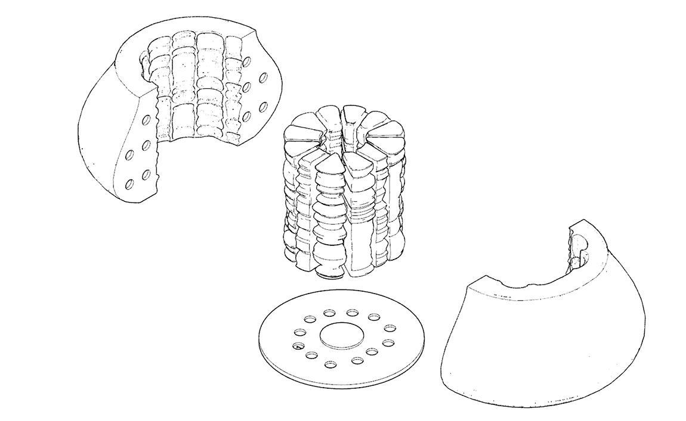This distribution could be used to fabricate an archival "pot" containing this web of word-wave relationships.
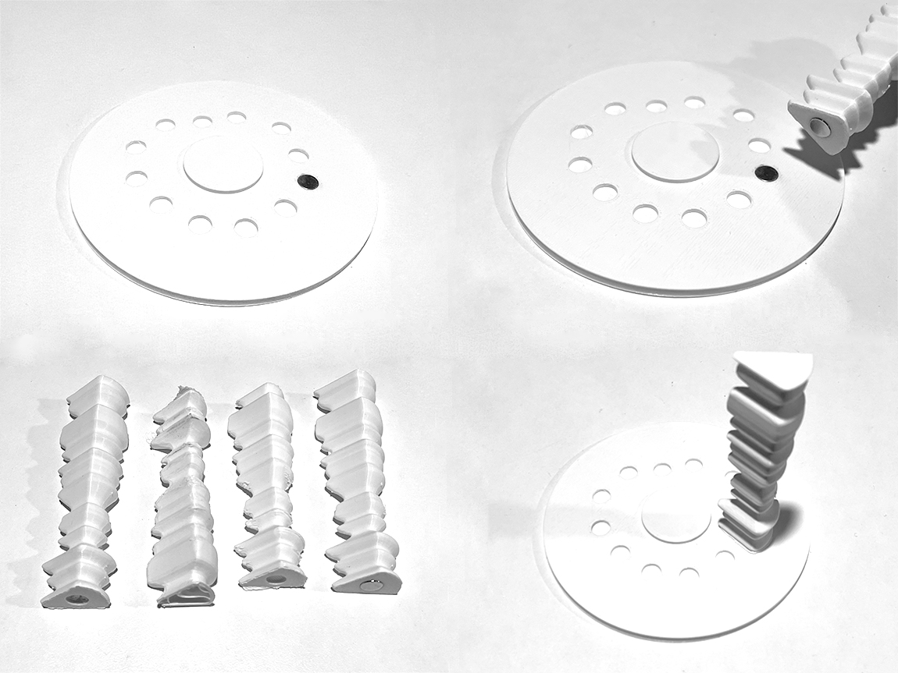Prototyping for physical fabrication. This includes several fitting tests for magnets to snap each piece into place.
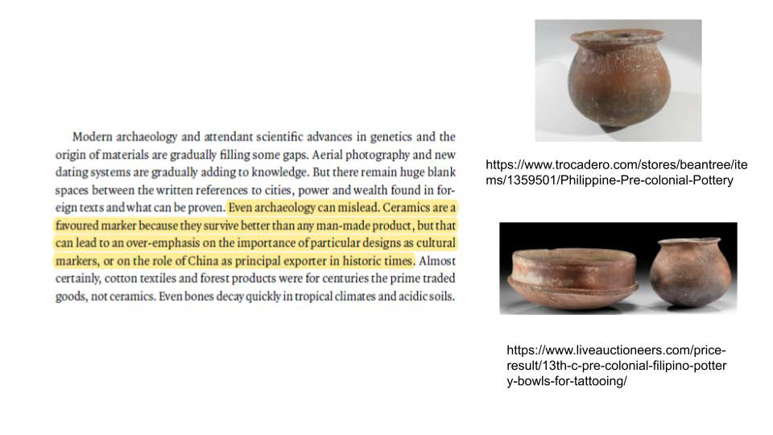
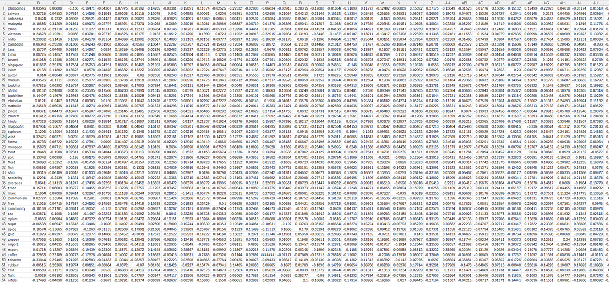 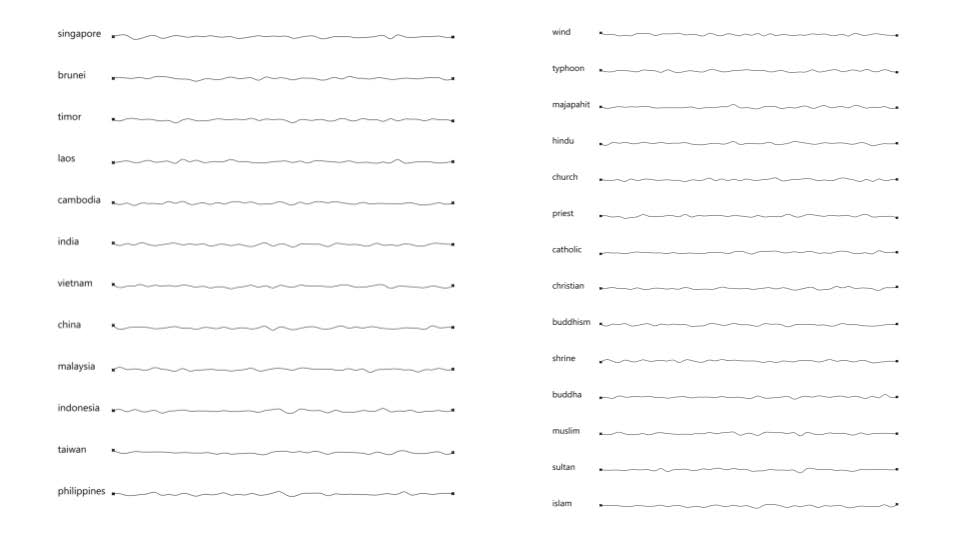
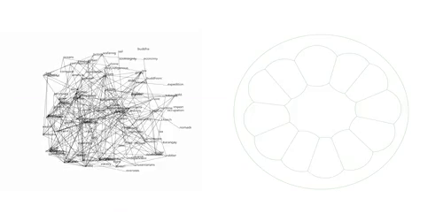
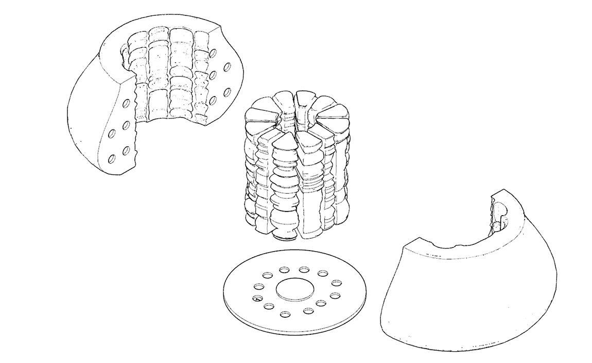
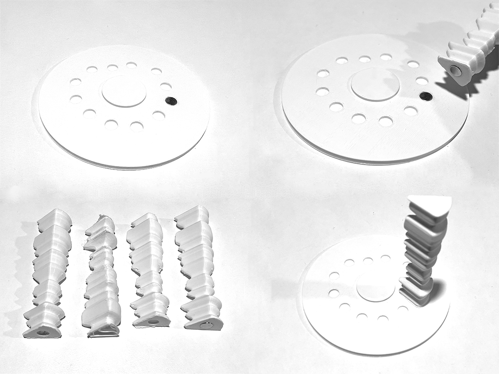